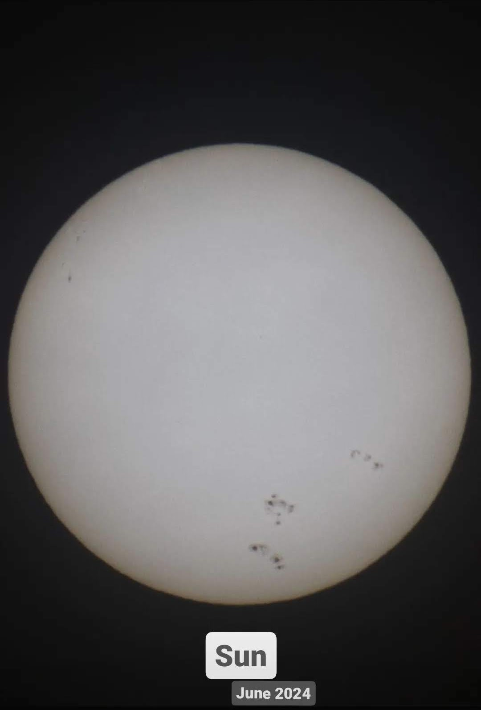

Sarthak Choudhary
Education
PhD: Astroparticle Physics (2021-Present)
AstroCeNT, Nicolaus Copernicus Astronomical Center of Polish Academy of Sciences, Warsaw, PolandMTech: Astronomical Instrumentation (2017-2019)
Indian Institute of Astrophysics, Bengaluru | University of Calcutta, Kolkata, IndiaBTech: Electronics, Instrumentation, and Control (2012-2016)
YMCA University of Science and Technology, Faridabad, India
Research Projects
- PyTorch based Monte Carlo Pulse Shape Discrimination model and fitter for liquid Argon dark matter detectors
- Analytic Model for Estimation of Light Yield (AMELY) for liquid Argon detectors
- Measurement of wavelength shifting efficiency of plastics
- Calibration of Silicon Photo-Multipliers
Contact
Publications
Hobbies
Photographing the nature

See more photos here.
DIY Equipment
-
DIY clip-on solar filter
-
Camera with the clip-on solar filter
-
Picture of Sun taken with above equipment
